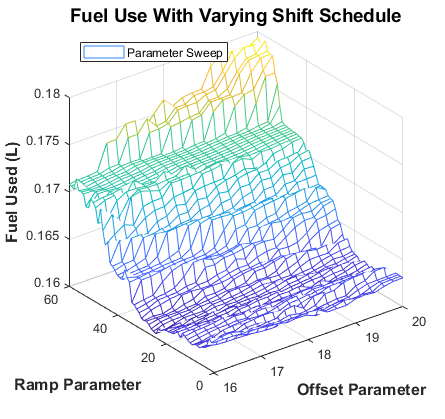
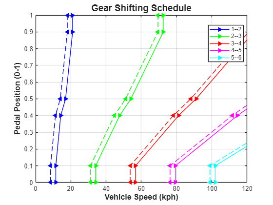
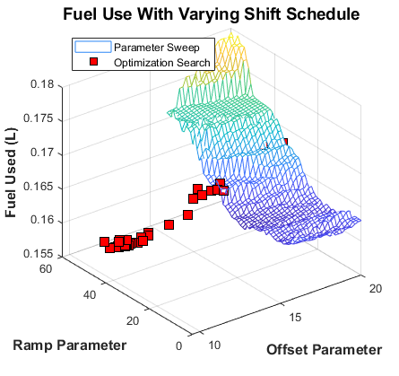
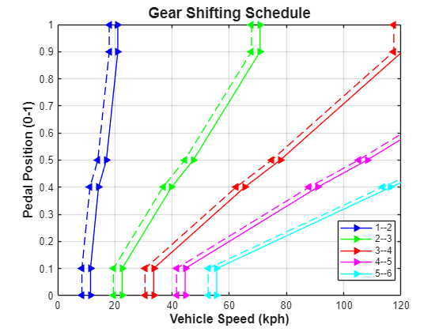

Dual Clutch Transmission - Optimization, 2 Parameters, fminsearch
This example shows a vehicle with a five-speed automatic dual-clutch transmission. The transmission controller converts the pedal deflection into a demanded torque. This demanded torque is then passed to the engine management. The pedal deflection and the vehicle speed are also used by the transmission controller to determine when the gear shifts should occur. Gear shifts are implemented via the two clutches, one clutch pressure being ramped up as the other clutch pressure is ramped down. Gear pre-selection via dog clutches ensures that the correct gear is fully selected before the on-going clutch is enabled.
The script below uses optimization algorithms to find shift map that maximizes fuel economy. The shift map is parameterized with 2 parameters to limit the design space. The optimization algorithm used is fminsearch.
Contents
Setup Optimization
Setup model
### Searching for referenced models in model 'Dual_Clutch_Trans'. ### Total of 1 models to build. 
Run optimization
Iteration Func-count f(x) Procedure
0 1 0.166869
1 3 0.166869 initial simplex
2 5 0.164907 expand
3 7 0.163784 reflect
4 8 0.163784 reflect
5 10 0.161509 expand
6 14 0.161509 shrink
7 16 0.160303 expand
8 18 0.159683 reflect
9 20 0.159647 contract outside
10 22 0.159647 contract inside
11 24 0.159473 contract inside
12 25 0.159473 reflect
13 27 0.159423 contract outside
14 29 0.159406 contract inside
15 31 0.159403 expand
16 33 0.159398 reflect
17 35 0.159076 expand
18 37 0.158984 reflect
19 39 0.158721 contract outside
20 41 0.158721 contract inside
21 43 0.158691 expand
22 45 0.158691 contract inside
23 47 0.158691 contract inside
24 48 0.158691 reflect
25 49 0.158691 reflect
26 51 0.158691 contract inside
27 55 0.15869 shrink
28 59 0.158688 shrink
29 61 0.158677 expand
30 62 0.158677 reflect
31 66 0.158677 shrink
32 67 0.158677 reflect
33 71 0.158677 shrink
34 72 0.158677 reflect
35 74 0.158677 contract inside
36 75 0.158677 reflect
37 79 0.158677 shrink
38 80 0.158677 reflect
39 84 0.158677 shrink
40 86 0.158677 contract inside
41 88 0.158677 contract inside
42 90 0.158677 contract inside
43 94 0.158677 shrink
44 98 0.158677 shrink
Optimization terminated:
the current x satisfies the termination criteria using OPTIONS.TolX of 1.000000e-03
and F(X) satisfies the convergence criteria using OPTIONS.TolFun of 1.000000e-04
Elapsed Sim Time = 490.5908
 